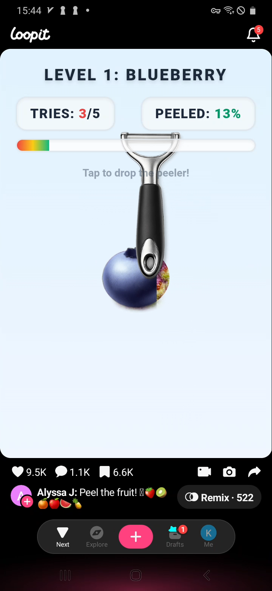
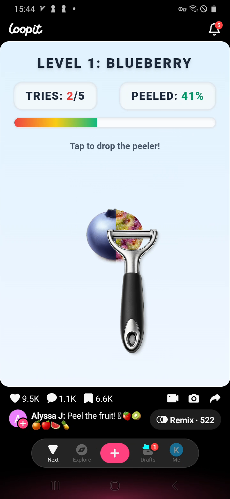
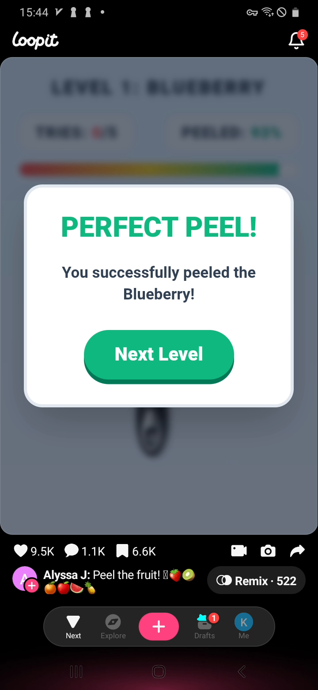
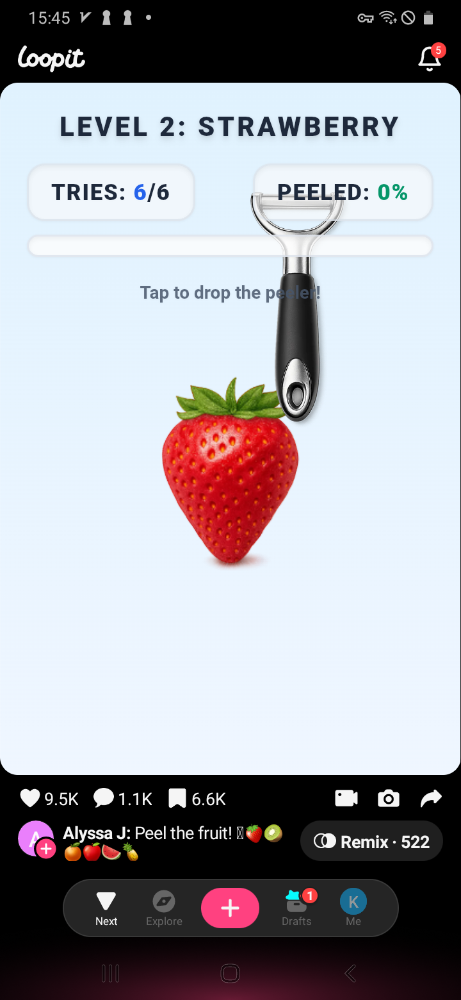

How to play
- Open the game in the Loopit app feed. Level 1 starts with Blueberry, 5 tries, and Peeled 0%.
- Watch the peeler position before tapping. The instruction says Tap to drop the peeler, so the main action is timing the drop, not dragging the fruit.
- Tap when the peeler is directly over or slightly crossing the fruit.
- Good drops reveal the inside of the fruit and increase the Peeled percentage.
- Keep using the remaining tries until the progress bar reaches 100%.
- After a successful Level 1 run, the result overlay says Perfect Peel and the Next Level button opens Level 2: Strawberry with 6 tries.
Controls
- Tap once to drop the peeler.
- Do not hold or drag; the game reads the tap timing.
- Use the peeler and fruit overlap as your visual cue, not the center of the full screen.
- The tries counter decreases after drops, while the Peeled percentage shows whether the hit helped enough.
- Tap Next Level after the Perfect Peel overlay to continue to the next fruit.
Strategy tips
- Be patient for the first hit. A clean early hit makes the remaining tries much easier.
- The best tap moment is when the peeler head visually overlaps the fruit, especially the unpeeled side.
- If the percentage barely moves, slow down and wait for a better alignment on the next drop.
- Use the progress bar to judge risk. At 41% with 2 tries left, you still need strong hits rather than random taps.
- The level can complete even if you do not peel the fruit in a perfectly even pattern, as long as the percentage reaches 100%.
- Level 2 keeps the same rule but changes the fruit to Strawberry and gives 6 tries.
Common mistakes
- Tapping immediately without checking where the peeler is.
- Trying to drag the peeler like a tool instead of using tap timing.
- Watching only the percentage and ignoring the fruit position.
- Using all tries on weak edge hits.
- Assuming Level 1 is the whole game; the Next Level button continues to more fruit.
Walkthrough screenshots





Loopit Peel the Fruit FAQ
How do you play Loopit Peel the Fruit?
Tap to drop the peeler when it lines up with the fruit. Each successful drop increases the Peeled percentage.
Do you drag the peeler?
No. In our recorded run, the game used tap timing. The prompt says Tap to drop the peeler.
How do you get Perfect Peel?
Reach 100% peeled before tries run out. For Level 1 Blueberry, we completed it within the 5 available tries.
What happens after Blueberry?
The Next Level button opens Level 2: Strawberry, with 6 tries and the same tap-to-drop rule.
Why did my peeled percentage barely increase?
You probably dropped the peeler too far from the fruit or clipped only the edge. Wait until the peeler overlaps the fruit more clearly before tapping.
Player notes
Player comments